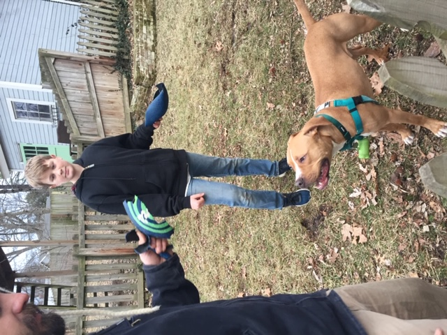

Journey Into the Land of Dog Adoption
Life Before Dogs
If I am being honest, I have never been a "dog" person. Or really an
"animal lover" kind of person. About 5 years ago, my two kids both
decided we really needed a pet dog. Fortunatly, at the time
we were renting a home that did not allow pets. I was happy to have a solid
excuse to not get them a dog. When we bought a home, they were
both so excited to finally be able to get a dog. My younger son was constantly
showing me pictures of his ideal dogs. I would catagorize those dogs as
"tough" or "mean looking".

Definitly not what I pictured to be a family dog.
After lamenting to a work friend about the boys really wanting a dog, not having time for training a puppy,
and not really knowing what kind of dog would work for our family, she told
me to check out Gateway Pet Gaurdians. After looking
at their social media accounts and website I learned that Gateway Pets has a match maker
that pairs people with pets that would be well suited to their needs.
We were able to describe our:
- daily schedules
- ages of people in our home
- the personality traits we would like our dog to have
- our energy level
Foster Program
Another thing that we felt was pretty awesome about this
organization is that instead of keeping animals in the shelter, they put
dogs that are available for adoption into foster homes. Fosters are volunteers that take dogs home and help to teach the animals basic homelife skills so they can be successful when they are adopted. Pets learn how to adjust to a home environment, they are potty trained,
crate trained, practice walking on a leash, etc. This also helps Gateway Pets know
more about the dogs that they are finding homes for. Not all dogs
like cats, or can be around kids. Knowing a dogs personality and needs has
helped Gateway pets adoptions be successful for the dog and potential pet owners.
Adoption Process
I slowly filled out an adoption application. Looking at the available dogs
pictured on their website, I was a little disappointed that most of them
seemed to be pitbul mixes. I had been hoping for some kind of fluffy furry
dog. I was sure that a pitbull type dog was not going to be a dog I could
be comfortable around. My son was adament though that we would really
love one of these dogs. We sent in the application and were soon contacted
and asked if we wanted to meet a dog named "Wyat." They said he seemed like he would be a great match for us based on our application. We set up a meet and
greet for the following weekend. Wyat came bounding into our house with his
foster mom in tow. He was curious, excited, and huge! After a few sniffs around
the house he settled onto the couch and started to fall asleep. My interest was
peaked. I thought "Wait! He is a pitbull mix and didn't even try to attack me!""

He stayed for his trial week and we all fell in love. This tough looking
dog loved to be wrapped up in blankets, was afraid of the rain, and needed to
snuggle any chance he had.
 For too long I believed the misinformation about
putbulls. They are great companions and really just want to keep their owners happy.
For too long I believed the misinformation about
putbulls. They are great companions and really just want to keep their owners happy.

Becoming a Foster
Since adopting Wyat was so much fun, we decided to sign up to be a foster home. We have had the privledge of taking care of some great dogs while they wait to find their homes. Our last foster dog ended up being too
good of a match for us, and we decided to keep her as part of our pack too! Now I am the crazy dog lady and I love it.